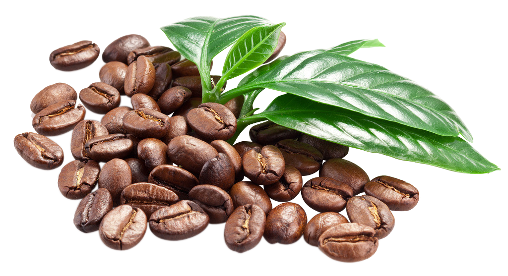

Coffee
Coffee can have a variety of flavors, including sweet, sour, nutty, fruity, and more. The flavor of coffee can change as it cools.

Desserts
Dessert is a sweet food typically eaten after a meal, such as lunch or dinner.enjoy the Desserts with your love.

Specials
Coffee can have a variety of flavors, including sweet, sour, nutty, fruity, and more. The flavor of coffee can change as it cools.